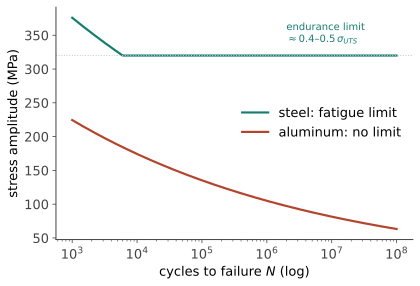

性能 II · 断裂、韧性与疲劳
工程结构的灾难性事故几乎从不是"应力超过屈服强度"，而是裂纹：从看不见的缺陷长起来，某一刻突然贯穿。本页给三件真正决定安全的知识——断裂力学（裂纹的判据）、韧脆转变（温度的陷阱）、疲劳（时间的陷阱）。这也是本站与机器的力学站（:8091 失效线）分工最清楚的一页：那边讲怎么算，这边讲为什么材料是这个韧性。
1. 断裂力学：为什么强度不够用
Griffith 的洞察（1920）：脆性材料的实际强度远低于理论值，因为存在裂纹——裂尖应力集中放大到局部断键。能量判据：裂纹扩展当"释放的弹性能 ≥ 新建表面的能量"：
读法：断裂强度由最大裂纹长度决定，不由材料的键强决定——这是材料工程最重要的思维转向之一（也是结构 IV"玻璃很强却一划就断"的答案：表面微裂纹）。
现代形式（Irwin）：应力强度因子 \(K = Y\sigma\sqrt{\pi a}\) 描述裂尖场强度，材料抵抗值 \(K_{IC}\)（断裂韧性，单位 MPa·√m）是新的材料常数。判据 \(K < K_{IC}\)。金属的 \(K_{IC}\) 高不是因为表面能大（\(\gamma_s\) 只有 J/m² 级），而是裂尖塑性区消耗巨额功（\(G_c\) 可达 kJ/m²——三个数量级的差距全在塑性）：韧性 = 让位错在裂尖前面帮你挡刀。
容许缺陷尺寸（设计的真正问题）：\(a_c = \frac{1}{\pi}\big(\frac{K_{IC}}{Y\sigma}\big)^2\)——它把无损检测的能力与设计应力绑在一起：能测出 2 mm 的裂纹，就得保证 \(a_c > 2\) mm。"损伤容限设计"（航空标准做法）的全部数学在这一行。
强度-韧性的反相关：高强钢的 \(K_{IC}\) 通常更低（强度靠限制位错、韧性靠位错耗能——同一个机制的两面）。这是材料界最顽固的权衡之一，Ashby 图上表现为一条压制线；突破它是先进材料研究的永恒主题（前沿 I）。
2. 韧脆转变：温度的陷阱
BCC 金属（碳钢！）与部分 HCP 存在韧脆转变温度 DBTT：低于它，冲击功断崖式下跌——因为 BCC 位错运动的 Peierls 应力强烈温度敏感（结构 II 的伏笔），低温下位错动不了，裂尖无法产生塑性区 ⇒ 韧性归零。
历史现场：二战期间数百艘 Liberty 轮在冷水中船体脆断（部分断成两截）——低温 + 焊接残余应力 + 高硫钢的三重叠加；泰坦尼克号钢板的低温冲击韧性同样是事后分析的焦点。FCC 金属（奥氏体不锈钢、铝、铜）没有 DBTT——所以 LNG 储罐（-162 °C）与低温设备一律用奥氏体不锈钢或铝合金：这是"晶体结构直接决定选材"最硬的一条工程规则。
3. 疲劳：时间的陷阱
80–90% 的机械失效来自疲劳：远低于屈服强度的交变应力，循环足够多次后断裂。三阶段：裂纹萌生（表面滑移带、缺口、夹杂）→ 稳定扩展（每循环推进一点，断口留下疲劳辉纹）→ 瞬断。

Paris 定律（裂纹扩展速率）：\(\dfrac{da}{dN} = C(\Delta K)^m\)（\(m \approx 3\)）——寿命预测的工作马；结合 \(a_c\) 与检测间隔即得检修周期。
疲劳的工程铁律（每条都可救命）：① 表面是战场——抛光、喷丸（引入残余压应力）、渗氮可提升寿命数倍；② 应力集中是元凶——尖角、螺纹根、焊趾；圆角半径加大是最便宜的改进；③ 平均拉应力有害（Goodman 图修正）；④ 腐蚀环境下疲劳极限消失（腐蚀疲劳——工艺 IV 再会）。
彗星号客机（1954）：方形舷窗角的应力集中 + 增压循环疲劳导致空中解体——现代客机所有舱窗都是圆角，这是用生命换来的一条设计规则。
4. 数字感与反直觉
- \(K_{IC}\)（MPa·√m）：玻璃 ~0.7 ｜ 氧化铝 ~4 ｜ 铸铁 ~20 ｜ 中碳钢 ~50 ｜ 韧性压力容器钢 ~100+ ｜ 韧性铝 ~30；
- 由此算容许裂纹：\(\sigma = 500\) MPa 的高强钢（\(K_{IC} = 50\)）\(a_c \approx 3\) mm；同应力下 \(K_{IC} = 100\) 的钢 \(a_c \approx 13\) mm——韧性翻倍，容许缺陷四倍（平方关系）；
- 反直觉：陶瓷不是"强度低"（抗压强度极高），是韧性低——它输在裂纹面前而不是应力面前；提高材料强度可能降低结构安全性（\(a_c\) 缩小到检测不出来）——这是"越强越安全"直觉最危险的失效点。
【研】对标 Anderson《Fracture Mechanics》；J 积分、CTOD、小范围屈服修正、疲劳短裂纹与损伤容限方法论是研究生纵深。🔗 机器的力学站失效线给宏观算法，本页给微观机理，两站配合读。
金属与陶瓷的力学讲完了。下一页换一个家族——高分子：链的物理学，一套完全不同的规则（时间与温度可以互换！）。